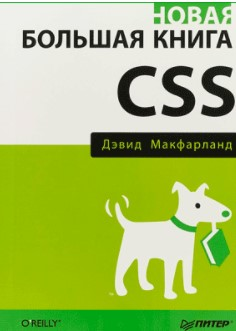

3) Большая книга CSS. Дэвид Макфарланд

Последнее издание книги поможет разобраться в основах HTML, но главная ее цель – это создание быстрых и динамичных страниц с помощью разметки CSS3. Книгу можно рассматривать как справочное руководство. Она будет полезна как верстальщикам, так и веб-дизайнерам. На страницах есть примеры кода, а также скриншоты с реальных сайтов.
Следующая литература